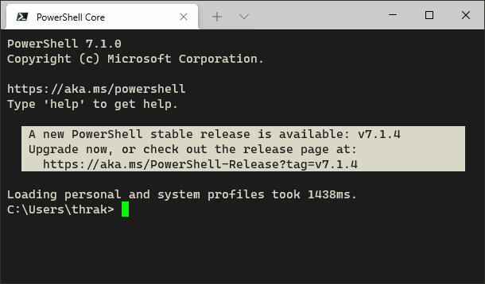
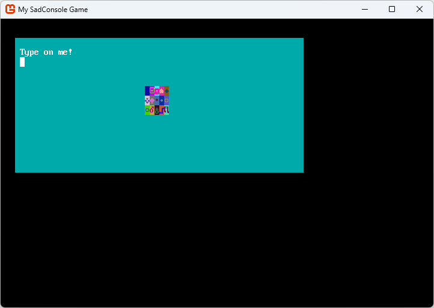
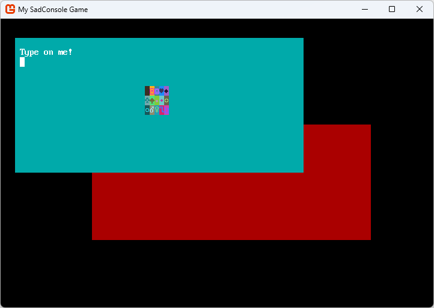

Get Started 2 - Cursors and parenting
This article is the 2nd in the series of Getting Started tutorials for SadConsole. In this article you'll learn how to use the Cursor object to write on a Console. SadConsole can also display more than one console, you'll also learn how to have multiple consoles on the screen.
Previous articles in this tutorial:
Prerequisites
To start this part of the tutorial you'll need to have created a SadConsole project, one that was created by following the previous tutorial in this series. However, you may have been experimenting with your code. To make sure that you start this tutorial with the same code, copy and paste the following code into your program.cs:
using SadConsole.Configuration;
Settings.WindowTitle = "My SadConsole Game";
Builder configuration = new Builder()
.SetScreenSize(90, 30)
.UseDefaultConsole()
.OnStart(Startup)
;
Game.Create(configuration);
Game.Instance.Run();
Game.Instance.Dispose();
static void Startup(object? sender, GameHost host)
{
if (Game.Instance.StartingConsole is null)
throw new NullReferenceException("You should never have this error if you used the UseDefaultConsole startup code.");
Console startingConsole = Game.Instance.StartingConsole;
}
Use the Cursor
The SadConsole.Console type is the basic type you use to get data on the screen. As you learned in the previous part of this tutorial series, you can use methods like SetGlyph, SetForeground, and even Print, to draw on the console. There is another way to write to the console, something you may be more used to, and that's the console cursor.
When you run a terminal program, such as cmd.exe or bash, you're presented with a blinking cursor, letting you know it's ready for you to type something. When the programs you run communicate back to you, that cursor prints things to the screen:

SadConsole provides a cursor system as way to show users where text is about to be written, where they should use the keyboard to type, or just as a convenient way to draw to a console. You can chain cursor commands into a series of actions:
- Match the printing style of the cursor to the host console.
- Move the cursor to position 20,21
- Print the text "Kato is my favorite dog"
- Change the print color to Green
- Move the cursor to a new line
- Print the text "No, Birdie is my favorite dog"
Replace the Startup code with the following and run your program:
static void Startup(object? sender, GameHost host)
{
if (Game.Instance.StartingConsole is null)
throw new NullReferenceException("You should never have this error if you used the UseDefaultConsole startup code.");
Console startingConsole = Game.Instance.StartingConsole;
startingConsole.Cursor.PrintAppearanceMatchesHost = false;
startingConsole.Cursor
.SetPrintAppearanceToHost()
.Move(0, 21)
.Print("Kato is my favorite dog")
.SetPrintAppearance(Color.Green)
.NewLine()
.Print("No, Birdie is my favorite dog");
}
The first thing the code does is alter the cursor's look. By default, the cursor always prints text in the style of the console that hosts the cursor. Once Cursor.PrintAppearanceMatchesHost is set to false, the Cursor.PrintAppearance property is used to color the printing. This defaults to a Black background and White foreground.
The code causes the cursor to do things, but you don't see a cursor on the screen. By default, the cursor is invisible and doesn't respond to the keyboard. To show the cursor, change the IsVisible property to true.
static void Startup(object? sender, GameHost host)
{
if (Game.Instance.StartingConsole is null)
throw new NullReferenceException("Unsure why. If you used a game config with SetStartingScreen, it destroys the StartingConsole object.");
Console startingConsole = Game.Instance.StartingConsole;
startingConsole.Cursor.PrintAppearanceMatchesHost = false;
startingConsole.Cursor
.SetPrintAppearanceToHost()
.Move(0, 21)
.Print("Kato is my favorite dog")
.SetPrintAppearance(Color.Green)
.NewLine()
.Print("No, Birdie is my favorite dog");
startingConsole.Cursor.IsVisible = true;
}
Run your program and you'll see the cursor blinking. When you type though, nothing happens. The cursor is currently visible, but it's not been enabled yet. To make your cursor respond to keyboard events, there are two conditions that must be satisfied:
- The console must be focused (you can use
startingConsole.IsFocused = trueto focus the console). By default, the "starting console" is already focused. - The cursor must be enabled.
To enable the cursor, set the IsEnabled property to true.
static void Startup(object? sender, GameHost host)
{
if (Game.Instance.StartingConsole is null)
throw new NullReferenceException("Unsure why. If you used a game config with SetStartingScreen, it destroys the StartingConsole object.");
Console startingConsole = Game.Instance.StartingConsole;
startingConsole.Cursor.PrintAppearanceMatchesHost = false;
startingConsole.Cursor
.SetPrintAppearanceToHost()
.Move(0, 21)
.Print("Kato is my favorite dog")
.SetPrintAppearance(Color.Green)
.NewLine()
.Print("No, Birdie is my favorite dog");
startingConsole.Cursor.IsVisible = true;
startingConsole.Cursor.IsEnabled = true;
}
Now when you run the game, you'll see that the cursor is blinking, and when you type on the keyboard, the cursor prints the characters to the screen!
Containers
SadConsole has a framework in place that lets you create more than one console and display them at the same time. SadConsole provides a generic object that allows parenting but doesn't display anything itself: ScreenObject.
The starting screen is a Console, so we'll need to get rid of that and start over if we want a base container object. Let's create a new ScreenObject that will host a few consoles.
First, we don't need the starting console since we'll provide our own object. Remove the .UseDefaultConsole() line from the startup configuration:
Builder configuration = new Builder()
.SetScreenSize(90, 30)
.OnStart(Startup)
;
Second, erase all the code in the Startup method:
static void Startup(object? sender, GameHost host)
{
}
Now, do the following:
- Create a new
ScreenObjectand assign it to a variable namedcontainer. - To make this object the main object processed by SadConsole, assign it to the
Game.Instance.Screenproperty.
static void Startup(object? sender, GameHost host)
{
ScreenObject container = new ScreenObject();
Game.Instance.Screen = container;
}
The previous code you used at the start of this article used the Game.Instance.StartingConsole property, and now you're using the Game.Instance.Screen property, conceptually known as the "current screen." When SadConsole starts up with the default console turned on, the Game.Instance.Screen property is assigned to the StartingConsole property, so they're referencing the same object. The current screen is the object that's processed by SadConsole every game frame. It represents what is on the screen visually.
If you run the game now, nothing will be displayed. A ScreenObject is just a container that lets you add multiple child objects to it, but it itself doesn't draw anything. Console also supports child objects, since it's also a ScreenObject, and it would draw itself. So, ScreenObject is the type you want to use when you have a container that doesn't need to draw anything directly.
First child console
The first console we'll create will be displayed on the top-left part of the screen. It won't take up the whole screen, and it'll use a unique background color so that it can be distinguished from the second console we'll soon create.
static void Startup(object? sender, GameHost host)
{
ScreenObject container = new ScreenObject();
Game.Instance.Screen = container;
// First console
Console console1 = new(60, 14);
console1.Position = (3, 2);
console1.Surface.DefaultBackground = Color.AnsiCyan;
console1.Clear();
console1.Print(1, 1, "Type on me!");
console1.Cursor.Position = (1, 2);
console1.Cursor.IsEnabled = true;
console1.Cursor.IsVisible = true;
console1.Cursor.MouseClickReposition = true;
console1.IsFocused = true;
container.Children.Add(console1);
}
The code above introduces a few new concepts you may be unfamiliar with:
console1.Position = (3, 2);containeris the root object, which doesn't draw anything because it's aScreenObject, however, it contains a single child:console1, added by the last line of the code:container.Children.Add(console1).console1draws something on the screen because it's a console. Children are positioned relative to their parent. In this case,console1is positioned at (x3,y2) of its parent,containerwhich is at (x0,y0). The final drawing position ofconsole1is calculated using the formulaself.Position + parent.Position. Becausecontaineris the root object and is positioned at (x0,y0), which is the top-left of the game window, soconsoleis drawn at (x3, y2) on the window. Ifcontainerwas moved to (x1, y1),consolewould be drawn at (x4, y3).Positions are calculated differently between objects that have a surface versus those that are containers. This is explained later.
Tip
The position is a
Pointtype. Instead of usingnew Point(3, 2), thePointtype supports interpreting(3, 2)as aPoint. You can use that syntax anywhere you need aPoint.console1.Surface.DefaultBackgroundandconsole1.ClearEach console (which is made up of a surface) has a
DefaultBackgroundandDefaultForegroundproperty. The background property is the most important of the two. This controls the "fill" color used on each cell. SadConsole has some optimization built into it based on this property. You'll always want to set theDefaultBackgroundproperty to match your most used background color of a console. Any cell whose background matches theDefaultBackground, is optimized by skipping its own background drawing.The
console1.Clearmethod is called to reset every cell to the new default background color. In our case, this makes sure every cell is colored with a Cyan background.console1.Cursor.MouseClickReposition = trueThis allows the mouse input to move the cursor for you. When you click on the console, the cursor will reposition itself to wherever the mouse was clicked.
console1.IsFocused = truePreviously when you were using the starting console, it was automatically focused, so you didn't have to worry about that. Only the focused object receives keyboard input. If the
containerwas focused,console1still wouldn't receive keyboard input, even though it's a child object. This is a common mistake developers make with SadConsole, they forget to Focus the console or object to receive keyboard input.
When you run the code, you'll see a screen like the following, try typing with the keyboard and clicking the mouse:

Add a child to the first console
When children are added to a parent, they draw on top of those parents. Right now, the object hierarchy of Game.Instance.Screen consists of two objects.
- container
- console1
Note
Game.Instance.Screen is what is processed and drawn by SadConsole.
Let's add another object to the hierarchy. Instead of a Console though, add a ScreenSurface. A ScreenSurface is like a Console, with only with one minor difference, the console has a built-in Cursor. A ScreenSurface doesn't contain a cursor, though one could be added.
This surface is going to be a child of the console. It will be drawn on top of the console, however, we'll not allow it to gain focus or process any input. Add this code after the previous code.
// Add a child surface
ScreenSurface surfaceObject = new(5, 3);
surfaceObject.Surface.FillWithRandomGarbage(surfaceObject.Font);
surfaceObject.Position = console1.Surface.Area.Center - (surfaceObject.Surface.Area.Size / 2);
surfaceObject.UseMouse = false;
console1.Children.Add(surfaceObject);
When you run the program and you can see the other surface displayed on top of the console.

Right now, the object hierarchy of Game.Instance.Screen is:
- container
- console1
- surfaceObject
Try moving the cursor and typing behind surfaceObject.
Second child console
The final thing we'll do is add a second console. This console will be a duplicate of the first, but with a different background color. This demonstrates changing focus between consoles and objects.
// Second console
Console console2 = new Console(58, 12);
console2.Position = new Point(19, 11);
console2.DefaultBackground = Color.AnsiRed;
console2.Clear();
console2.Print(1, 1, "Type on me!");
console2.Cursor.Position = new Point(1, 2);
console2.Cursor.IsEnabled = true;
console2.Cursor.IsVisible = true;
console2.FocusOnMouseClick = true;
console2.MoveToFrontOnMouseClick = true;
container.Children.Add(console2);
container.Children.MoveToBottom(console2);
There are two new properties and a new method being called here:
console2.FocusOnMouseClick = true;Remember, only the focused object receives keyboard input. If we want the second console to receive that keyboard input, we need to remove focus from the first console and give it to the second. Normally you do this with
target.IsFocused = true. SadConsole can detect when the mouse is clicked on a surface and automatically give it focus, which is what this code does. Set that property onconsole1also. You'll be able to click back and forth between both consoles and type on them.console2.MoveToFrontOnMouseClick = true;This property responds to the mouse click and moves the object to the top, last in the collection. The draw order of the objects is based on where they are in the
Childrencollection. Whichever object is added last becomes the top-most drawn object. Whichever object is first in this collection is the back-most drawn object. Changing an object's focus doesn't affect drawing order.container.Children.MoveToBottom(console2);Because we added
console2to thecontainerafterconsole1was added,console2is the top-most object drawn, being the last in the collection. However, we want the experience to be thatconsole1is the first console you interact with. There are two ways of doing this. First, the code above solved this problem by forcibly movingconsole2to the bottom of the collection. The second way is just adding the consoles in the order you want them to appear, with the last item added being the top-most. For example, remove the existingcontainer.Children.Addmethod calls for both consoles, and add this to the end of the code routine:container.Children.Add(console2); container.Children.Add(console1);Now the consoles are inserted in the order you want them displayed, with
console1on top.
Right now the object hierarchy of Game.Instance.Screen is:
- container
- console2 <-- first in the collection, drawn first, below others
- console1 <-- last in the collection, drawn last, on top of others
- surfaceObject <-- as a child of console1, drawn on top of it
When you run the program and you can see and interact with both consoles.

When interacting with the game, try clicking on the different consoles. You'll notice a few problems:
- After you click on
console2(Red) it's moved to the front and if you click onconsole1(Cyan) ...console1stays in the background instead of moving to the foreground.- If you type,
console2still responds to the keyboard, even though you clicked onconsole1.
- When you click on
console2(Red), the cursor isn't moved to the position of the mouse like withconsole1.
These behavior differences are from a few properties that are set differently between console1 and console2. Can you fix those bugs? Try and see if you can!
Conclusion
Now you have both a working console and a non-console surface. You've explored how SadConsole uses the Cursor object to let you type, emulating a terminal. You also learned how to parent one object to another and move items within the parent's Children collection. The next part of this series will explore more about the keyboard and mouse input.